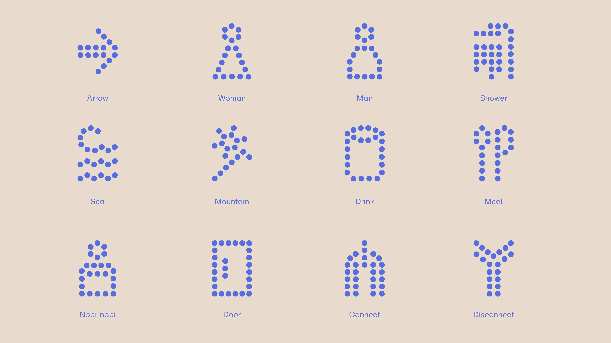
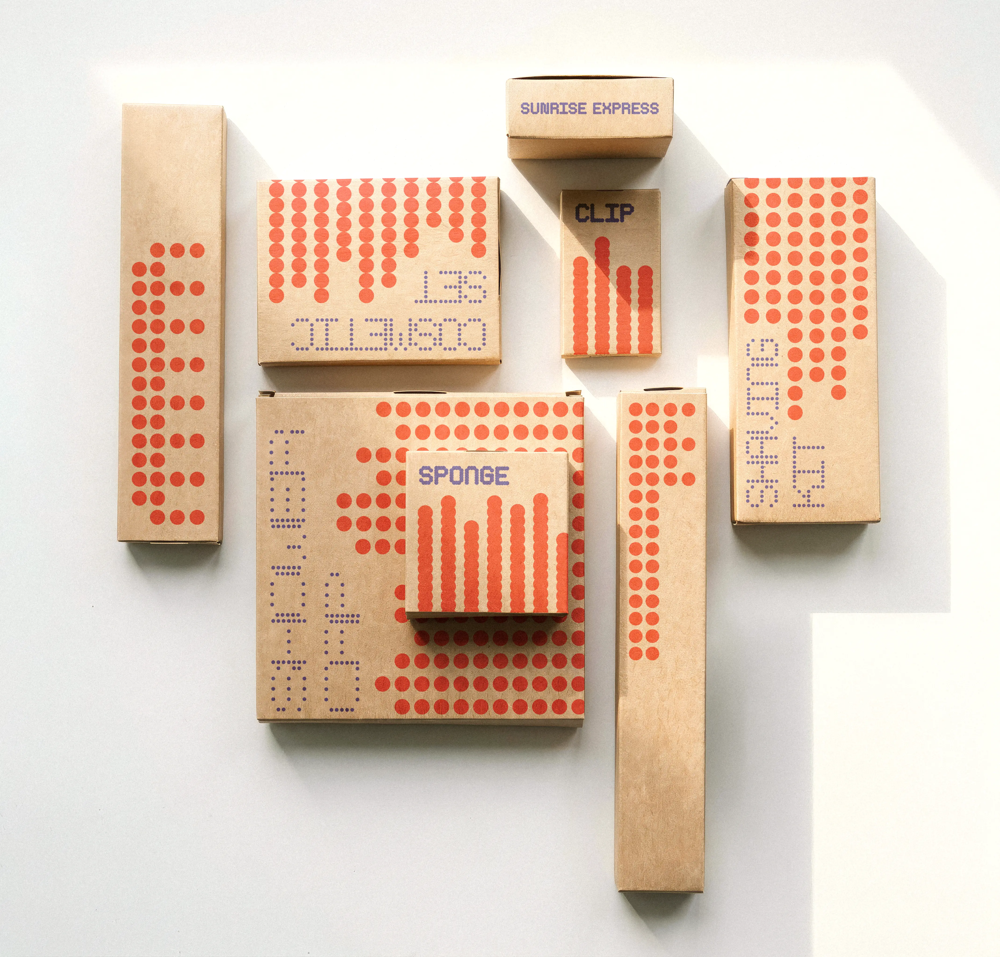
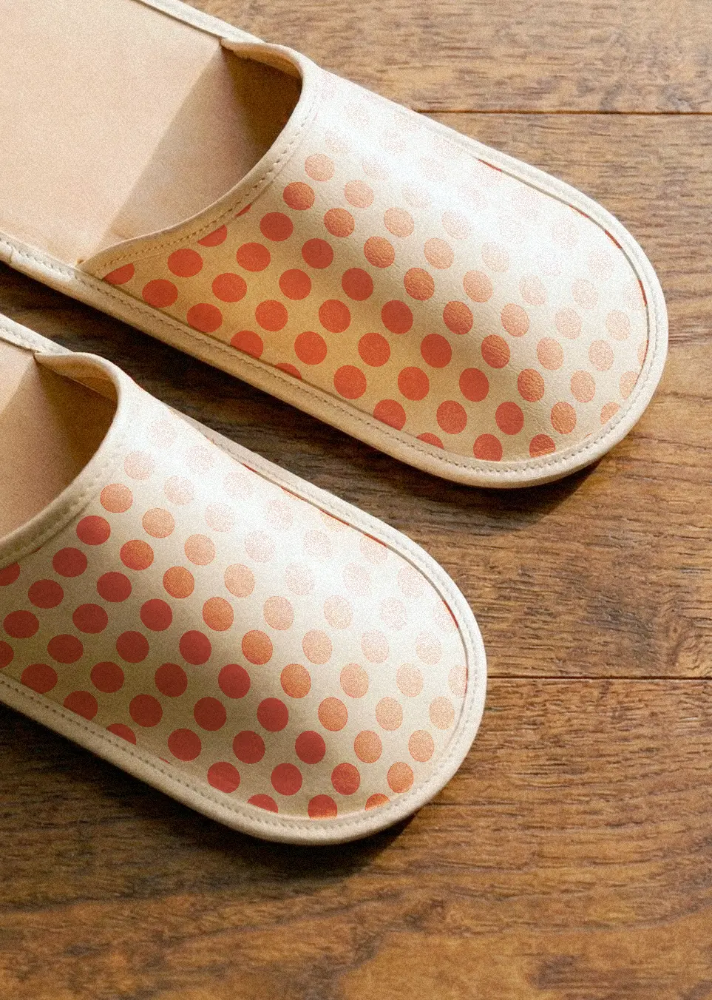

Sunrise Express
This project is a rebranding of the Sunrise Express Izumo and Seto, Japan’s overnight train service. In developing the identity, I was inspired by scanimation. The Sunrise Express operates as a single train, but at a certain station it splits into two separate routes, Izumo and Seto,each continuing to a different destination. I saw this structure of “combining and separating” as conceptually similar to scanimation, where multiple images coexist and reveal different visuals through movement. Based on this idea, I developed a visual identity that expresses the coexistence and transition between two distinct flows. I also incorporated circular forms, an iconic visual element of Japan, to reinforce the train’s cultural context. As a result, I created a variable typeface and a pattern system based on circular forms, establishing a cohesive and flexible brand identity.





